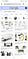

Online world physics and product modeling and marketing

The Online world has it’s kind equations and laws also here X + Y = this data about how they are… into revenues, this new solution of service or product, this app, this platform or this software. Not only a product marketing designer but a product modeller who plays with equations and data, services, apps, platforms, ideas... like variables to find innovative tech products well engineered to spread because of the laws of dynamics and physics of virtual world the product marketing designer knows.
Product designs concepts and shapes culture.
